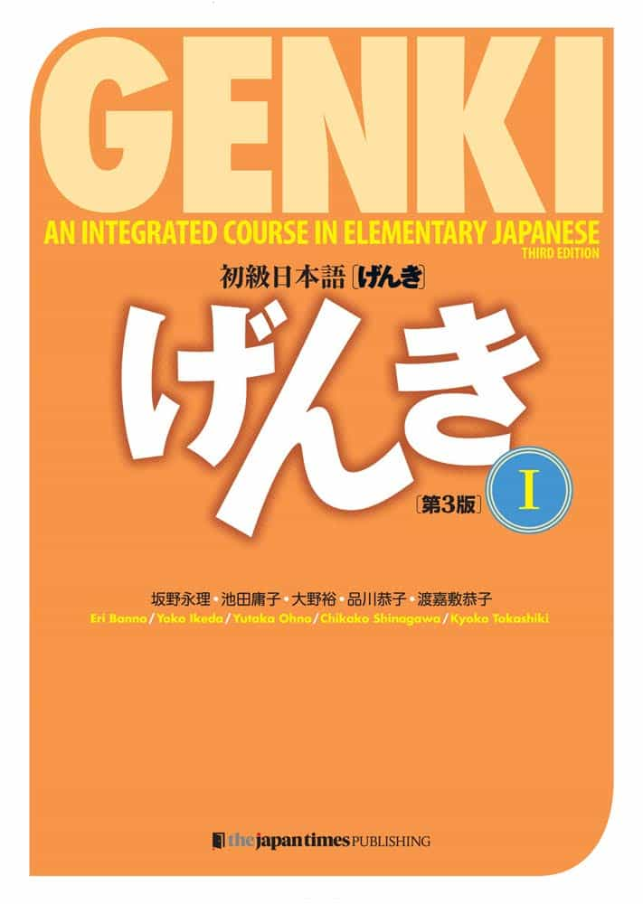

Genki
Genki is the most famous beginner-friendly Japanese text-book. The explanations for complicated grammar structures are made simple, arguably the best out of any other Japanese textbook. To get a basic grasp of Japanese, I highly recommend purchasing Genki I and Genki II. By the end of both textbooks, you’ll be far from fluent, but you’ll certainly grasp the most important building blocks of the Japanese language.